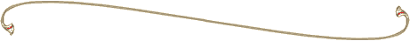

SMOOT Surname Y-DNA Project
Why Do DNA Testing?

How It Augments Traditional Research
DNA analysis may be the only way to separate Smoot families into discreet units because so
many documents are lacking in the paper trail. In ordinary genealogical research, you start with
what you know and go toward what you don’t know. In research to accompany DNA analysis, you start
back at the beginning and work forward until you get to living male descendants whose DNA can
answer many of our questions.
Why Do We Test Living Male Descendants?
All men and only men have a Y chromosome. This biological fact allows us to trace back in time a
direct, largely unchanged genetic line of inheritance from father to son.
The second thing that makes the Y chromosome unique is that the information carried on Y
chromosomes is inherited largely intact over time. Unlike other chromosomes, the genetic
material on the Y chromosome is not mixed with each new generation. The information carried
on the Y chromosome travels from father to son as a nearly exact copy of itself.
Occasionally, during the DNA copying process, small changes or mutations occur, and it
is these mutational differences that allow us to distinguish the Y chromosome of an individual
from his ancestor’s. Thus, an actual genetic record of the male line going back through time
exists -- as clear a marker of paternal heritage as a father’s family name.
A tangible timekeeper of history, the Y chromosome allows us to trace human evolution,
track migration patterns and relatedness in groups of people, and answer paternity questions
going back generations. Through testing of the Y chromosome, we begin to unravel some fascinating
stories about our own origins.
Who Can Take The Y-DNA Test?
Only direct male Smoot descendants can take the Y DNA test. Only males carry the Y chromosome
that is used in the test. (The part of the Y chromosome that is tested is considered “junk”
material; however, it is passed from generation to generation in exact duplication from father to
son for thousands of years. It only mutates slightly every 500 generations or so.) We need three or
four direct male descendants from each Smoot line. If you are a female, you must get a father, brother,
or male cousin or distant cousin, who is a direct line Smoot, to take the test for you.